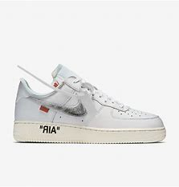

Nike selection
Many people collect and trade Nike shoes as a way to express their style. The company has collaborated with a number of artists, designers, and athletes to create limited edition releases that are highly sought after by collectors. Here at Sneakers we have many highly desired collaborations for you to collect. Whether you're an athlete or just looking for a comfortable and stylish pair of shoes, Nike has something to offer for everyone. Nike produces shoes for a variety of sports, including running, basketball, soccer, and tennis. Each shoe is designed to provide specific support and features that are tailored to the demands of the sport. If you don't really care for the performance, Nike has always provided great fashion for shoes. We all know the very iconic and popular swoosh on all Nike’s. Please shop around and discover what Nike’s we have to offer. Don’t worry if you didn’t find a pair you liked here. If you would like to continue shopping, we have more shoes to offer and more shoes on the way. Stay tuned and don’t miss out on updates and deals.
Buy nowFeatured Products
- Off-White Airforce
 Nike Dunk
Nike Dunk